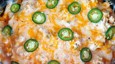

Slow Cooker Jalepeno Popper Chicken

Description
Easy meal prep when you want to make your coworkers jealous without spending a lot of time. A slow cooked
chicken dish best served over rice, in a tortilla, or in enchiladas.
Ingredients
- 3 chicken breasts
- 8 oz, or 1 packet of cream cheese
- 1 ranch seasoning packet
- 1 can of rotel
- 1 can of black beans
- 1 bag of frozen southwest corn, pepper and onion mixed veggies
- As many jalepenos as you would like. Treat yourself
- Optional pepper jack cheese
Directions
- Place all of the listed ingredients into a slow cooker or instant pot
- If using a slow cooker, cook on either low for 8 hours, or high for 4 hours;
if using an instant pot, cook on the chicken setting for 1 hour and let it slowly
depressurize on its own.
- Once done, use 2 forks to shred the chicken and mix everything together.
- Serve over rice, or however strikes your facncy. Packs up great and reheats well.